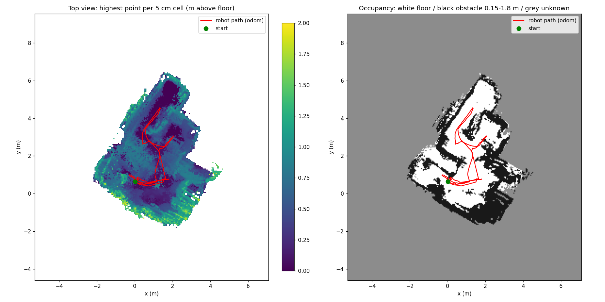
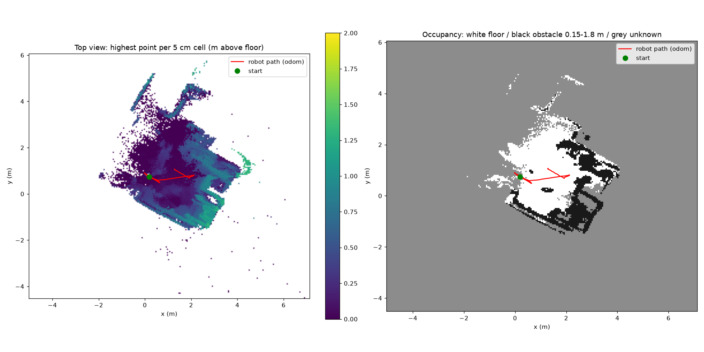
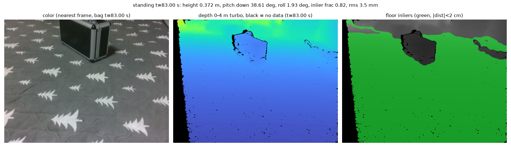
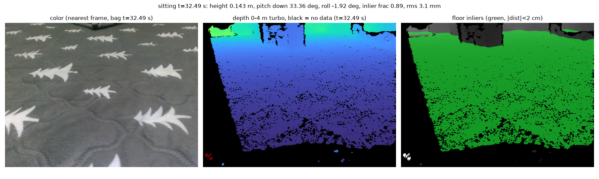

Go2 X 실기 · 숙소 · 2026-11-19 새벽
팀장이 조이스틱으로 방을 걸었고, Jetson 은 라이다 · 카메라 · 로봇 상태를 녹화만 했다. 이 페이지는 그 녹화로 무엇을 만들었고 어떻게 만들었는지를 보인다.
~/go2_diag/records/ 두 녹화 (학습 PC 에 체크섬 대조로 거울) · 이슈 #861 · GO2X-JETSON-SETUP-1119.md 5 · 7 절녹화 1 · 04:59~05:07

만든 순서 (스크립트 room_map.py, Jetson 의 ROS 2 환경에서 실행)
/utlidar/cloud_deskewed (L2 점구름, 13.6 Hz) 와 /utlidar/robot_odom (로봇이 다리 · IMU 로 추정한 자기 위치) 를 8 분 녹화. 점구름 7016 장.cloud_deskewed 는 Go2 가 이미 odom 틀 (출발점 기준 바닥 좌표) 로 옮겨 내보낸다. 그래서 장마다 점을 그대로 쌓으면 지도가 된다.| 값 | 숫자 | 출처 |
|---|---|---|
| 걸은 길 | 20.75 m · 493.6 초 | room_map_info.json |
| 그림 범위 | 12.4 × 14.1 m | |
| 바닥 칸 · 장애물 칸 | 9546 · 4492 | |
| 쌓은 점 | 37,567,767 |
SLAM 이 아니다. SLAM 은 걸으면서 지도를 만들고, 같은 곳에 돌아오면 어긋난 위치를 고친다 (고리 닫기). 이 지도는 Go2 의 자기 위치 추정 (odom) 을 고치지 않고 그대로 믿었다. 그래서 오래 걸을수록 어긋남이 쌓이고, 이번에도 벽이 두 겹으로 보이는 곳이 있다 (눈으로 본 것 · 잰 값 아님).
Go2 자체 SLAM (/uslam) 은 토픽은 있었지만 켜는 API 번호를 Jetson 에서 찾지 못해 켜지 않았다. 05:39 에 uslam_record.sh 로 녹화를 시도했지만 27 초에 메시지 2 개 (고정 좌표 1 · 카메라 외부 매개변수 1) 뿐이었다. L2 · /uslam · 카메라 영상은 0 개이고 감시는 「5 초 안에 로봇 상태 없음」 을 남겼다 (05:20 녹화도 141 초에 본체 토픽이 모두 끊겼고 로봇은 계속 걸었다 · Jetson 이 본체 통신을 잃은 것으로 보임 · 까닭 미확인). 그래서 Go2 자체 SLAM 자료는 없다. 11/19 낮 학원 (노트북) 에서 Unitree 앱 지도 메뉴로 켜 보는 것이 다음 할 일이다.
녹화 2 · 05:20 · 같은 방법
05:20 녹화 (카메라까지 같이 남긴 것) 로도 같은 방법으로 지도를 만들었다. 다만 이 녹화의 L2 점구름과 odom 은 처음 141~147 초만 들어 있다. odom 으로 잰 순서는 앉음 0~63 초 · 일어섬 63 초 · 가만히 섬 ~99 초 · 걷기 99 초부터라, 지도에는 걷기 앞 약 42 초 (그중 움직인 시간 약 21 초) · 걸은 길 5.12 m 만 들어갔다. 141 초에 Go2 본체에서 오는 것 (L2 · odom · IMU · 관절 상태) 이 한꺼번에 끊겼고, 카메라 영상으로는 로봇이 그 뒤에도 290 초 무렵까지 걸었다. 그래서 로봇이 멈춘 것이 아니라 Jetson 이 본체 쪽 통신을 잃은 것으로 보인다 (까닭 미확인 · README).

스크립트는 04:59 의 room_map.py 를 ROS 2 없이 읽도록 옮긴 room_map_rosbags.py 다. 옮긴 뒤 04:59 녹화에 다시 돌려 원래 지도와 수치가 같은 것을 먼저 확인했다 (README).
두 녹화의 점을 3D 로 돌려 보기 · 5 cm 칸마다 한 점 · 높이 색 · 위를 잘라 방 안을 볼 수 있다.
녹화 2 · 05:20~05:26
두 번째 걷기에는 D435i 색 · 깊이를 같이 넣었다. 깊이는 0~4 m 를 무지개색으로, 검정은 값이 없는 곳이다. 왼쪽 검은 띠는 D435i 구조상 늘 생긴다 (왼쪽 렌즈만 보는 영역).
302.9 초에 녹화가 4 초쯤 끊겼다. 그 구간은 마지막 화면이 멈춰 있고 빨간 「stale」 글자가 뜬다.
녹화 2 에서 계산
깊이 영상의 점을 3 차원으로 펴고, 위를 향한 가장 큰 평면 (바닥) 을 매 프레임 찾았다. 카메라에서 그 평면까지 거리가 높이, 평면이 기운 정도가 각이다. 로봇이 가만히 서 있던 30 초와 앉아 있던 45 초의 모든 깊이 프레임을 썼다.
| 자세 | 카메라 높이 | 아래로 숙인 각 | 옆 기울기 | 맞춘 프레임 | SDK 몸 높이 |
|---|---|---|---|---|---|
| 선 자세 (매트 위) | 0.3716 m | 38.59° | +1.89° | 816 / 816 | 0.322 m |
| 앉음 | 0.1431 m | 33.35° | −1.94° | 1229 / 1229 | 0.069 m |


파일 전부와 체크섬: 20261119-0520-room-walk-full/README.md · 계산 스크립트 go2x_cam_derive.py · 값 floor_summary.json
원본 자리
| 무엇 | 자리 |
|---|---|
| Jetson 원본 (bag · monitor) | ~/go2_diag/records/20261119-0459-room-walk/ · ~/go2_diag/records/20261119-0520-room-walk-full/ |
| 학습 PC 거울 (9.7 GB · 체크섬 0 차이) | /home/jay/data/go2x_raw/jetson_go2_diag/records/ |
| 학습 PC 원본 영상 (26 MB · 85 MB) | /home/jay/data/go2x_raw/jetson_go2_diag/records/20261119-0520-room-walk-full/derived/ |
| 저장소 (이 페이지가 쓰는 것) | inbox/jay/20261117-go2-x-sim-match-checklist-assets/20261119-0459-room-walk/ · …/20261119-0520-room-walk-full/ |
다음
| 할 것 | 상태 |
|---|---|
| 방 지도 1 차 (odom 그대로 쌓기) | 끝 11/19 05:19 |
| 05:20 녹화 지도 · 두 녹화 3D 점 페이지 | 끝 11/19 14:3x |
| 카메라 높이 · 각 (매트 위 · 앉음) | 끝 11/19 06:33 |
| 줄자로 잰 몸 · 카메라 높이 · 맨바닥 각 | 할 것 노트북 Codex · 팀장 줄자 |
Go2 자체 SLAM (/uslam) 지도 · 저장 · 다시 불러 위치 찾기 | 할 것 Unitree 앱으로 켜기 · uslam_record.sh |
| 녹화로 오프라인 SLAM (고리 닫기) | 할 것 /uslam 이 안 되면 |